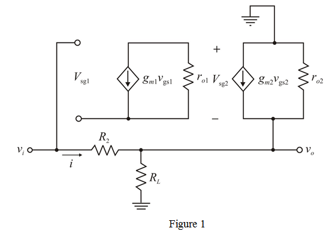
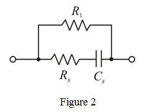

Refer to Figure P5.126 in the textbook for the circuit.
The gate to source voltage is, .
The drain current of  is, .
is, .
Current flowing through resistors  and
and  is,
is,
From the dc circuit, write the following relation.

Refer to Figure P5.126 in the textbook for the circuit.
The gate to source voltage is, .
The drain current of is, .
Current flowing through resistors and is,
From the dc circuit, write the following relation.
Given output voltage,.
From the above circuit we have
Substitute for  , for
, for  , and for
, and for  in the equation.
in the equation.
Therefore, two resistors are and.
Small-signal equivalent circuit is shown in Figure 1.

Apply Kirchhoff’s voltage law to the input loop.
…… (1)
From the circuit, the voltage  is,
is,
Apply Kirchhoff’s current law at output node.
Substitute  value in equation (1).
value in equation (1).
Therefore, gain of the amplifier is, .
The transconductance of transistor  is,
is,
The transconductance of transistor  is,
is,
The output resistance of the first transistor is,
The output resistance of the first transistor is,
Now, the voltage gain of the amplifier is,
Therefore, voltage gain of the amplifier is,
From the circuit, write the following relation:
Divide the equation with  .
.
 and for
and for  in the equation.
in the equation.
The voltage gain of the amplifier is,
Given circuit diagram consisting of a common-source amplifier followed by a source1ollower.
This arrangement acts like op-amp circuit and equation for gain of this arrangement is,
Therefore, voltage gain the amplifier is .
The effective source resistance  can be reduced by using configuration shown in Figure 2.
can be reduced by using configuration shown in Figure 2.

In small signal analysis capacitor acts like short circuit,  and
and  are in parallel.
are in parallel.
Now, the voltage gain of the amplifier by considering above network is,
…… (2)
Substitute for  , for
, for  , and for
, and for  in the equation.
in the equation.
Therefore, resistance  is .
is .